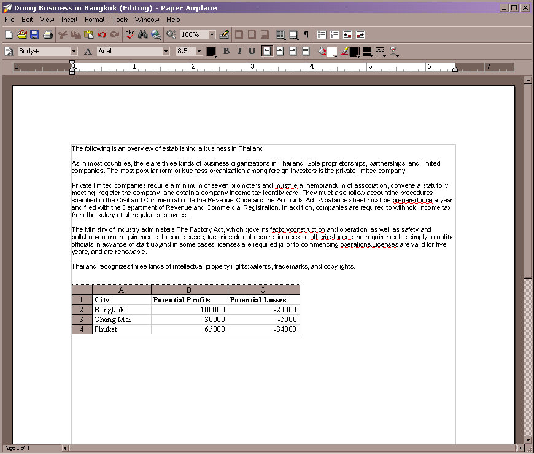

| | |
Table of Contents | Last | Next
Introduction
Interested in expressing yourself creatively and politically on the Web, for free and easier than you can imagine?
Intrigued by the idea of web-sites that feel more like a community of friends and less like a one-way television?
Couldn't care less about configuring web servers, setting up domain names, or learning HTML?
Welcome to Paper Airplane and the Two Way Web.
Paper Airplane is a non-commercial web browser that makes these promises true by radically including everything needed to author and view web sites for free. It fuses a web browser, a powerful word-processor, and a peer-to-peer web server together to create the Two Way Web. Paper Airplane sledgehammers the Two Way Web Sites it creates, smashing them into hundreds of fragments that are securely stored across a multitude of machines in a process known as peer-to-peer. Choose from hundreds of new domain endings for your site, such as .politics, .fan, .religion, .gay, or .environment. Want to create a web-site named www.Nike.laborpolicy, www.CodingInParadise.weblog, or www.DallasCowboys.fan? Go for it. Finally, Paper Airplane includes an advanced What You Create Is What Your Users See (WYCIWYUS) office suite that can create word processing documents, spreadsheets, presentations, and more. Best of all, Paper Airplane is free in every sense of the word: free to download, free to create sites and domain names, and free as in open-source.
Use Paper Airplane to browse the World Wide Web or pages on the new Two Way Web:
Use the Two Way Web Directory to easily find sites on the Two Way Web that match your interests:

The engine underlying the features in Paper Airplane is a new kind of organic, grassroots web site, known as a Two Way Web Site. These new sites are advanced, online communities that completely integrate the tools necessary to create, maintain, and share content. They provide a host of abilities far beyond older web-sites: single-sign on, integration of all the tools needed for editing and creating content in the browser such as a powerful word processor and wizards, and site members and member roles.
The New Site Wizard makes it easy to create new web sites. Your new web site is saved on the peer-to-peer Two Way Web rather than on a server or on your own machine:
Easily find out who the members of a Two Way Web Sites are or new changes to the site by using the bundled Members and New Changes sidebars:
 |
 |
The Old Web stores web sites on centralized servers that are expensive and difficult to maintain; Paper Airplane smashes Two Way Web Sites into hundreds of fragments that are securely stored across a multitude of machines. When a Two Way Web Site is requested, the fragments coalesce like drops of mercury in a process known as peer-to-peer. This peer-to-peer process makes it possible to create new Two Way Web Sites for free. Instead of pulling out a credit-card and configuring a web-server, you simply save your pages just as you save documents in your word processor today. No fuss no muss.
Paper Airplane colorizes the monotone domain name system. Your world isn't just about .COMpanies, .EDUcational institutions, or .ORGanizations, so why should the web? Paper Airplane adds more than a hundred free new domain endings, such as .religion, .fan, .sucks, .love, .cooperative, .gay, .marryme, .politics, .environment, and more. Plus, you can create your own ending without asking anyone's permission.
Paper Airplane finally frees us from the tyranny of HTML by integrating a powerful editor. Gone are endless nights spent trying to get web pages to look the same across many different browsers; with the Paper Airplane editor, What You Create Is What Your Users See (WYCIWYUS). Paper Airplane achieves this by replacing the aging, crusty HTML file-format with a new format that better encodes how your documents look on the screen. Easily drag-and-drop images from your desktop into your document and freely position them in your page without using HTML hacks like tables. Use columns to create advanced online newsletters. You will fall in love with the powerful AutoLink feature, which transforms creating hyperlinks into a stream of consciousness. Even better, since Paper Airplane's editor is fully integrated into the browser, getting work done productively and efficiently is faster and easier than it's ever been. If you have the proper permissions, editing a page is as simple as clicking the Edit Page button located on every Two Way Web page. And remember, because other site member's can also edit through their Paper Airplane browser, web pages become more like discussions and less like the strait-jackets they are today.
To edit a page in a Two Way Web Site, simply press the Edit Page button in the browser:

Creating new pages is just as easy; simply press the New Page button and select what kind of page you wish to start with:

Use the powerful Paper Airplane editor to make changes to pages; add spreadsheets, drawings, and more:

When you are finished editing, simply select Save from the File menu; your page will be transparently saved onto your web site in the peer-to-peer network and can now be viewed by other people:


Did we also mention that the Paper Airplane browser itself is also completely open-source? Need to customize a feature or have an idea for a business centered around Paper Airplane? Go for it.